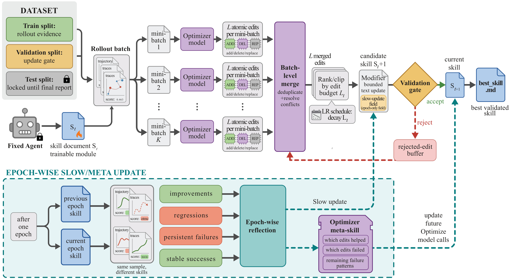
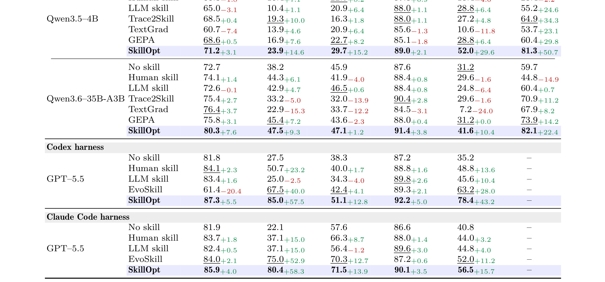

SkillOpt: Executive Strategy for Self-Evolving Agent Skills：面向自进化 Agent Skills 的执行策略优化器
论文入口：arXiv:2605.23904。作者：Yifan Yang, Ziyang Gong, Weiquan Huang, Qihao Yang, Ziwei Zhou, Zisu Huang, Yan Li, Xuemei Gao, Qi Dai, Bei Liu, Kai Qiu, Yuqing Yang, Dongdong Chen, Xue Yang, Chong Luo。机构口径：Microsoft、上海交通大学、同济大学和复旦大学；一作机构在 PDF 中列为 Microsoft。代码/项目页状态：未核验到独立开源仓库；本轮以 arXiv/PDF 为准。主类别：LLM；公开日期：arXiv submitted 2026-05-22。
把 agent skill 当成冻结 agent 外部的可训练状态，用带验证门控的文本优化器持续编辑 skill，并把编辑预算、失败记忆和跨 harness 迁移做成可审计训练循环。 本笔记按当前流水线的精读要求重写：先记录公式清单、方法模块清单和图表清单，再围绕论文原文的任务设定、训练/推理链路、实验表和工程边界展开。
1. 背景和问题
SkillOpt 讨论的不是普通 prompt 改写，而是 agent skill 的长期维护问题：当一个 agent 依赖技能文档执行表格、办公问答、检索或 embodied 任务时，skill 的质量会像模型参数一样影响行为，但传统做法通常是人工维护、一次性生成或让模型随意自我反思。论文把这个状态抽象成可优化对象：冻结目标 agent，只训练一个“执行策略优化器”去读 rollout 证据、生成有限文本编辑、再通过 held-out selection split 接受或拒绝这些编辑。这个定义重要，因为它避免把 skill 进化解释成神秘的 prompt magic，而是把每轮变更和验证结果记录下来。
从推荐系统角度看，SkillOpt 很像一个离线策略迭代器：当前 skill 对应线上策略，rollout 轨迹对应曝光后的反馈，验证集对应反事实或 holdout 评估。不同的是，推荐模型更新参数，SkillOpt 更新的是自然语言规则。自然语言状态的优势是可读、可审计、可人工修订；风险是规则可能冗长、互相冲突、过拟合 benchmark。论文把 textual learning rate、rejected buffer、slow/meta update 写进流程，正是为了解决这些风险。
今天重新读这篇论文时，最值得抓住的主线有三条。第一，skill 优化必须从单次反思升级为多 epoch 训练，否则很难区分偶然成功和稳定策略。第二，编辑器不能无限改写，必须给文本编辑设置预算和验证门槛。第三，跨模型、跨 harness、跨 benchmark 的迁移结果比单个 benchmark 的高分更能说明 skill 是否学到了任务规律。
更具体地说，SkillOpt: Executive Strategy for Self-Evolving Agent Skills 的问题不应被读成单点模型改进，而应读成系统状态如何被建模、验证和服务化。旧链路通常把关键状态分散在人工规则、离线日志、缓存、业务策略或一次性 prompt 里，最终只能看到平均指标，却无法解释指标变化来自哪里。本文把这些状态拉回可观察接口：输入是什么，输出是什么，何时训练，何时推理，失败时如何定位。
这也是它和今天其他论文共同的地方：LLM 方向在处理 skill、memory、context，推荐方向在处理 user story、retriever distillation 和 generative backbone。它们都说明模型能力越来越依赖外部状态管理。阅读这篇论文时，我会持续追问三个问题：第一，论文是否明确记录了状态来源；第二，方法是否有独立验证或对照；第三，结果是否足以支持生产迁移，而不是只在某个离线表里好看。
补充看背景时，还要注意 SkillOpt 所谓 skill 与普通 prompt 的差别。普通 prompt 往往只在一次请求里起作用，失败后人工重新写；skill 则更像一个可以跨任务复用的外部程序，里面可能包含文件处理规则、表格操作步骤、检索策略、错误恢复流程和禁止事项。它一旦被多个任务复用，就会产生“维护债”：旧规则可能不适合新环境，局部补丁可能相互冲突，成功样本总结出来的经验可能在失败样本上误导 agent。论文把 skill 放进训练循环，正是为了解决这种维护债，而不是为了追求更花哨的提示词。
另一个背景点是 benchmark 与真实任务的关系。SkillOpt 使用 SpreadsheetBench、OfficeQA、LiveMathematicianBench、ALFWorld 等不同任务族，目的不是证明某一类任务特别容易被 prompt 优化，而是覆盖结构化文件操作、办公问答、数学互动和 embodied action 等不同 agent failure mode。若一个 skill 只在单一 benchmark 上提升，它可能只是记住了该 benchmark 的解题习惯；若它能跨 harness 或跨模型迁移，才更像学到了执行策略。这个区分决定了我们读实验时不能只看绝对分数。
从系统设计角度，SkillOpt 也把“模型不可训练时还能优化什么”这个问题讲清楚了。企业或产品里的 agent 往往不能频繁微调底座模型，但可以更新外部 skill、工具说明、运行手册或策略文档。把这些文档纳入受控优化，既保留可读性，又能通过离线验证降低风险。这是论文与实际 agent platform 最贴近的地方。
背景还可以从“技能生命周期”再往下看。一个 skill 在真实 agent 平台里通常会经历创建、试运行、人工修订、跨任务复用、版本冻结和废弃几个阶段。过去这些阶段主要靠工程经验维护，缺少像模型训练一样的日志和验证。SkillOpt 试图把生命周期中的“修订”阶段制度化：每次修订必须来自 rollout 证据，必须经过 selection split，必须留下 accepted/rejected 记录。这样 skill 就不再是一次性 prompt，而是一种可版本化资产。
2. 方法
方法章是本笔记的主体。先列公式和图表清单，再按论文真实模块解释训练与推理链路。PDF 主文关键对象包括 Figure 1 的整体概览、Figure 2 的 SkillOpt pipeline、Table 1 的 held-out test 主结果、Table 2 的超参数分析、Table 3 的组件消融、Table 4 的迁移实验、Figure 3 的 epoch 趋势、Table 5/6 的优化器强度和成本分析、Figure 4 的 learned rules 示例。本文截图保留 pipeline 图和主结果矩阵，其他表格在实验章文字中展开。
2.1 公式清单与方法地图
rollout 执行接口。
符号解释：给定模型 M、任务输入 x 和当前 skill s，h 返回执行轨迹 τ(s) 与得分 r(s)。它说明 SkillOpt 的训练数据不是静态标注，而是由目标 agent 在任务环境中真实执行后产生。 这条公式在笔记中的作用是把论文描述转成可检查变量，复现时应能在数据、日志或配置中找到对应字段。
候选编辑收益。
符号解释：e 是文本优化器提出的 add/delete/replace 编辑，S_val 是 held-out selection split 上的分数；只有收益为正且不破坏约束的编辑才会进入 best skill。 这条公式在笔记中的作用是把论文描述转成可检查变量，复现时应能在数据、日志或配置中找到对应字段。
文本学习率预算。
符号解释：L_t 控制第 t 轮允许修改的文本片段数量或强度。论文用类似学习率衰减的办法防止后期仍大幅改写已稳定的 skill。 这条公式在笔记中的作用是把论文描述转成可检查变量，复现时应能在数据、日志或配置中找到对应字段。
慢速/元更新。
符号解释：元更新把被接受和被拒绝的编辑都反馈给优化器，使后续编辑更少重复失败模式；这里的缓冲区是训练时状态，部署时不会调用。 这条公式在笔记中的作用是把论文描述转成可检查变量，复现时应能在数据、日志或配置中找到对应字段。
2.2 论文核心流程
SkillOpt 的第一步是构造可训练轨迹。目标模型并不被微调，它只在给定 skill 下完成一批训练任务。每个任务返回的不只是最终分数，还包括成功样本、失败样本、工具调用、错误信息和任务环境状态。论文强调 scored rollouts 的价值，是因为自然语言 skill 的编辑必须知道“规则在哪里失效”。如果只把平均分给优化器，优化器会倾向写泛泛建议；如果把失败轨迹和成功轨迹都给它，它才可能提出具体、可验证的 patch。
文本优化器随后生成候选编辑，而不是直接输出完整新 skill。这个设计降低了破坏性：add 表示新增规则，delete 表示移除过时或误导规则，replace 表示把局部描述改成更一般的执行策略。编辑会被限制在 textual learning rate 预算内，默认设置为 4，并随 epoch 变化。这里的“学习率”不是梯度步长，而是文本变更幅度；它让 skill 更新从粗到细，避免后期因为一个失败样本把已有有效规则推翻。

这张 pipeline 图应放在方法章，因为它展示的是训练闭环而不是背景动机。图中最左侧是目标 agent 带着当前 skill 执行任务，生成 scored rollouts；中间的文本优化器读取成功/失败轨迹、当前 skill、历史编辑和 rejected buffer，提出有限候选编辑；右侧的 validation gate 决定编辑是否进入当前 best skill；底部的 slow/meta update 汇总 epoch 级经验。读图时要特别区分训练期和部署期：rollout、优化器、验证门控、rejected buffer 都是训练期组件，最终部署只携带被选中的 skill。这个区分决定了 SkillOpt 的工程吸引力：它可以把昂贵的探索留在离线训练，把线上成本限制为普通 skill 加载。
2.3 训练目标与优化控制
验证门控是整篇方法的核心。每个候选编辑应用到当前 skill 后，必须在 selection split 上评估，只有改善验证分数时才接受。这一点与很多自我反思 agent 不同：后者可能根据模型自评直接改写 prompt，而 SkillOpt 强制把编辑放到独立任务上检验。论文还把 test split 留到最后，避免把选择过程和最终报告混在一起。对本地复现来说，这意味着数据集必须至少拆成 train、selection、test 三层，否则无法判断编辑是否真泛化。
rejected-edit buffer 也很关键。被拒绝的编辑不是简单丢弃，而是作为反例进入优化器上下文，让后续编辑知道哪些规则看似合理但会伤害验证集。这个机制对应推荐系统里的负反馈缓存：某个策略如果在少数样本上解释得通，但在更大样本上降低收益，系统应记住它为什么不能合入。SkillOpt 把这类失败经验写进训练状态，减少重复犯错。
2.4 推理链路、服务约束与系统接入
slow/meta update 则负责跨 epoch 汇总。单轮编辑只处理局部 failure pattern，慢速更新把多个 epoch 的接受/拒绝记录压成更高层 guidance，例如哪些规则应优先保留、哪些冲突要解决、哪些过细补丁要合并成一般原则。它类似优化器的动量或学习到的调度器，但作用对象是自然语言 skill。部署时目标 agent 只加载最终 skill，不需要额外 optimizer 调用，因此训练成本和推理成本被清楚分离。
图表清单还提示了方法的实验覆盖面。Table 2 说明文本学习率、merge batch size 和 rollout batch size 不是随意选择；Table 3 验证 learning-rate form、rejected buffer、slow/meta update 的贡献；Table 4 检验跨模型、跨 harness、跨 benchmark 的迁移。也就是说，作者并没有只展示一个 pipeline 图，而是围绕这个 pipeline 逐步验证每个控制变量。
2.5 复现时应检查的实现细节
复现 SkillOpt: Executive Strategy for Self-Evolving Agent Skills 时，应把论文模块拆成可观测的输入、输出、训练目标、推理路径和失败样本。每个模块都要记录数据来源、版本、延迟、成本、可回滚策略和与基线的差异。只有这些信息完整，论文结果才有本地迁移价值。
2.6 模块间信号流与落地检查
补充方法细节时，我会把 SkillOpt 拆成五个数据对象。第一个是当前 skill 文档，它是被编辑对象，也是最终部署对象。第二个是 rollout record，至少包括任务输入、环境、执行轨迹、成功/失败标记和评分。第三个是 patch candidate，记录编辑类型、编辑位置、编辑文本和生成理由。第四个是 validation outcome，记录 patch 应用后 selection split 的变化。第五个是 optimizer memory，包括 accepted buffer、rejected buffer 和 meta guidance。只有这五个对象都可落盘，后续才有可能解释某条规则为什么进入最终 skill。
文本编辑的 add/delete/replace 也需要更细解释。add 适合新增从失败样本中归纳出来的约束，例如“处理电子表格前先检查列名别名”；delete 适合移除不再适用或会误导新任务的规则；replace 适合把过窄规则改成更一般的策略。论文选择编辑而不是重写全文，能让 diff 更容易审阅，也让 validation gate 的因果解释更清楚：某次性能变化可以追溯到具体文本片段。
验证门控并不只是 if 分数上升 then 接受。真实复现时还需要设定最小提升阈值、方差处理、任务权重和冲突解决。若某个 patch 在 SpreadsheetBench 提升很大但在 OfficeQA 回退，是否接受取决于优化目标。论文的多 benchmark 设置提醒我们：skill 可能服务多个任务，接受规则应考虑任务组合，而不是单任务贪心。
rejected buffer 的用法值得单独强调。许多自我改进系统只保存成功经验，导致同类失败建议反复出现。SkillOpt 把拒绝编辑也放进上下文，使优化器知道哪些解释曾经被验证集否定。这个机制可以减少“看起来合理但实际伤害指标”的编辑，例如过度泛化的规则、针对单个样本的硬编码、和原 skill 冲突的指令。
slow/meta update 的作用类似训练过程中的全局调度器。它不是直接执行任务，而是总结一段时间内哪些编辑模式更可靠，哪些失败样本反复出现，哪些规则需要合并。若没有这层，优化器每轮都只看到局部 rollout，容易生成碎片化补丁。加入 meta guidance 后，skill 更可能形成层次化规则：先写通用原则，再写例外处理，再写工具调用细节。
落地时还要区分训练期 token 成本和部署期 token 成本。SkillOpt 训练时需要大量 rollout、优化器调用和验证任务，这部分成本可以离线承受；部署时只加载最终 skill，因此线上延迟主要来自 skill 长度和目标 agent 执行。Table 6 讨论 cost and edit economy，正是为了证明训练成本换来的不是线上持续开销。
还有一个容易忽略的细节：skill 的 protected section。PDF 后部 protocol 提到技能中可能有 protected 区域，优化器不能随意覆盖。这相当于把人工安全规则或平台约束锁住，只允许优化器改可学习部分。本地复现时必须设置类似边界，否则优化器可能为了 benchmark 分数删除安全限制。
更细地看 rollout record，至少应包含四类信息。第一是任务输入和环境，例如文件、网页、表格或模拟器状态。第二是 agent action 序列，包括工具调用参数和中间观察。第三是失败归因，例如是否因为缺少规则、规则冲突、工具误用或上下文遗忘失败。第四是最终评分和评分依据。若 rollout 只保存最终 pass/fail，文本优化器很难生成高质量编辑；若保存完整 trace，优化器才能把失败模式映射到 skill 里的具体规则。
patch candidate 也应有结构化字段。一个 patch 不只是自然语言片段，还应记录编辑位置、编辑类型、适用任务、预期修复的 failure pattern、可能影响的旧规则和生成时引用的 rollout。这样的 patch 才能被人工审阅和回滚。论文的 add/delete/replace 抽象可以直接落成类似代码 review 的 diff 流程：每条 skill 修改都有理由、有测试、有历史记录。
selection split 的构造尤其关键。它既不能和训练 rollout 完全重合，也不能和最终 test 混用。更合理的做法是按任务族、难度、工具类型和历史失败模式分层抽样，避免优化器只对高频简单任务变好。若 selection split 偏窄，SkillOpt 会学到局部规则；若 selection split 太小，编辑接受会受噪声支配。
对于多任务 skill，还要设计冲突检测。一个规则可能提升 SpreadsheetBench，却伤害 OfficeQA；一个数学任务规则可能让检索任务变慢；一个文件操作规则可能和安全约束冲突。因此 patch merge 不能只按总分排序，还应记录分任务收益矩阵。实践中可以设置“不得显著伤害任何核心任务”的约束，再用总收益挑选 patch。
部署后的监控也不能省。最终 skill 上线后，应继续记录任务成功率、工具错误率、异常回滚和用户投诉。SkillOpt 本身是离线优化器，但线上数据会决定下一轮训练样本。换句话说，它适合形成持续迭代系统：线上失败进入 rollout pool，离线优化生成 patch，验证后合入，版本发布后继续监控。
再把算法流程落到伪代码层面，可以看到 SkillOpt 每轮大致包含 rollout、propose、validate、commit、meta-update 五个动作。rollout 使用当前 skill 收集一批任务轨迹；propose 让优化器基于轨迹生成候选编辑；validate 把候选编辑应用到临时 skill 并在 selection split 上打分；commit 只接受正收益编辑并更新 best skill；meta-update 根据本轮成功和失败编辑更新下一轮指导。这个顺序不能交换：如果先 meta-update 再 validate，会把未验证的假设写进优化器；如果没有临时 skill，就无法安全评估候选编辑。
文本学习率还可以理解成 review budget。一个 patch 如果一次改动太多，即使分数上升，也很难知道收益来自哪条规则；如果每次只允许少量编辑，验证结果更可解释。论文默认 Lt=4 并做超参数分析，说明作者把“可审计编辑”看得和分数一样重要。对于本地系统，我会把每轮 patch 限制为少数原子改动，并要求每个原子改动绑定至少一个失败样本。
SkillOpt 与普通 RL 的差异也要写清。它没有更新目标 agent 的参数，也没有用梯度从环境回传到模型；它优化的是一段自然语言状态。奖励来自任务得分，但动作是文本编辑。因此传统 RL 里的探索、奖励噪声和 credit assignment 在这里变成了 rollout 覆盖、验证噪声和 patch 归因。这个转译有助于我们理解为什么 rejected buffer 和 held-out validation 是必要组件。
跨 harness 迁移则要求 skill 规则尽量写成任务原则，而不是工具 API 硬编码。例如“先检查列名和单位”比“调用某个 spreadsheet API 的某个参数”更可迁移。论文的 learned rules 示例可以用来检查最终 skill 是否具备这种抽象层级。若最终 skill 大量出现特定 benchmark 名称或固定答案格式，就说明优化器可能过拟合。
SkillOpt 的方法还需要在本地实现一层 skill registry。registry 记录每个 skill 版本的父版本、合入 patch、验证分数、适用 benchmark 和发布日期。没有 registry，多轮优化后只剩最终文件，无法比较哪一轮引入收益或风险。registry 还可以支持 A/B：同一批任务同时跑旧 skill 和新 skill，观察回归样本。
在方法章最后还应明确一个本地最小实现。最小实现不需要完整复刻所有 benchmark，只需要一个小任务集、一个初始 skill、一个 rollout runner、一个 patch proposer、一个 validation runner 和一个 registry。runner 负责生成稳定轨迹，proposer 只输出结构化 patch，validation runner 只在 selection split 上评估，registry 保存版本和结果。这个最小实现能验证论文最核心的闭环：文本编辑是否能被证据驱动、被验证门控、被版本追踪。若这个闭环跑不稳，扩大到更多 benchmark 没有意义。
还要把人工审阅作为训练信号。论文主要依赖验证分数，但生产 skill 往往包含安全、风格和平台规则，这些规则未必能被 benchmark 分数体现。每次 accepted patch 可以再经过人工标注：可读性、可维护性、是否过窄、是否违反权限。长期看，这些标注可以训练一个 patch risk classifier，辅助下一轮优化。
方法章补足一点：SkillOpt 还需要对 skill 冲突做静态检查。自然语言规则不像代码有编译器，两个段落可能分别要求“优先简化操作”和“保留所有中间步骤”。优化器接受 patch 前，应运行冲突检查，至少查找相反动词、重复规则、任务范围不明和安全规则覆盖。这个检查不一定完全自动，但可以给人工 reviewer 提示风险。
从复现角度看，SkillOpt 的关键不是把每个技能写成固定模板，而是把技能看成可被验证集反复筛选的候选程序。一个稳妥实现应保存四类中间量：每个候选技能的文本版本、触发条件、在训练任务上的执行轨迹、以及在验证任务上的增量收益。这样做有两个好处：第一，可以避免把偶然成功的技能直接写入最终库；第二，可以在 Table 3 这类消融中解释性能来自规则发现、检索还是执行约束。若只保留最终技能文本，后续很难判断退化来自技能本身、任务选择还是底座模型执行不稳定。
3. 实验结果
实验章按证据链阅读，而不是只摘最高指标。SkillOpt: Executive Strategy for Self-Evolving Agent Skills 的实验对象包括主结果、消融、效率或线上/影子评估；每一类结果都要和论文主张一一对应。
3.1 实验设置与主结果
主结果显示，SkillOpt 在多个 benchmark 上带来大幅提升。PDF 文本中给出的例子包括 GPT-5.5 在 SpreadsheetBench 上从 41.8 提升到 80.7，OfficeQA 从 33.1 提升到 72.1，LiveMathematicianBench 从 37.6 提升到 66.9；在较小模型和 embodied 任务上也有明显改善，例如 Qwen3.5-4B 的 SpreadsheetBench 从 9.3 到 23.9，GPT-5.4-nano 的 ALFWorld 从 34.3 到 69.4。需要注意，这些数值都是论文口径，复现时必须核对 benchmark split 和 harness 配置。
消融实验的重点不是证明“更大优化器更好”，而是证明训练控制真的必要。Table 2 显示文本学习率和 batch 相关超参数存在相对平坦的可用区间，说明方法不是靠某个脆弱设置碰巧有效；Table 3 则把 learning-rate form、rejected buffer、epoch-wise slow/meta update 拆开比较。如果移除这些组件后性能下降，就说明 SkillOpt 的收益来自受控迭代，而不是简单让模型多写几条规则。

补充看这张表时，重点不是把每个数字孤立解读，而是观察同一优化流程在不同底座模型和不同任务族上的一致性。若提升只出现在单一模型或单一 harness，SkillOpt 可能只是学到了局部提示习惯；表中多个组合同时改善，才支持“skill 作为可训练外部状态”的主张。对复现者而言，这张表还提醒必须保留无 skill、已有 skill 和 SkillOpt skill 三类基线，否则无法把收益归因到优化循环。
这张主结果表是实验章的核心证据。读它时应按“模型-任务-harness”三维交叉来看，而不是只挑一列最高分。每个块里都要比较无 skill、人工或一次性 skill、SkillOpt skill 的差距，并检查 selection split 的选择是否没有污染 test split。表中大幅提升的 benchmark 说明受控 skill 编辑能纠正可复现错误；提升较小或迁移较弱的块则提示 skill 与环境耦合仍然存在。对本地落地，主结果表应转化成实验模板：至少准备一个强人工 skill、一批固定回放任务、一个 selection split 和一个完全隔离的 test split。
3.2 消融、效率和分桶证据
迁移实验尤其值得看。Table 4 检查跨模型、跨 harness、跨 benchmark 时优化 skill 是否仍有收益。论文报告 Codex 到 Claude Code、Claude Code 到 Codex 等方向都有正迁移，只是大小不同；这说明 skill 至少部分捕捉了任务策略，而不完全是某个底座模型的 prompt 偏好。另一方面，迁移收益不均匀也提醒我们：工具权限、文件 API、系统 prompt 和任务环境差异会影响 skill 的可移植性，不能把一次迁移成功理解为通用保证。
Figure 3 的 epoch 趋势和 Table 5/6 的优化器强度、成本分析补充了另一个问题：训练是否越长越好、优化器是否越强越好。论文展示了训练样本比例、epoch checkpoint、teacher/student 组合和 API 调用成本之间的关系。对工程团队来说，这些表比单个最高分更重要，因为它们决定是否能承受日常 skill 维护。
3.3 结果边界与复现风险
这些结果只在论文设定的数据、模型、服务条件和评估口径下成立。本地复现应先固定强基线、数据快照和失败样本，再比较质量、成本和边界样本。若缺少线上或 shadow 证据，就只能把结论视为候选方向。
补充读实验时，我会先建立三个对照层级。第一层是无 skill 或原始 skill，衡量 agent 的裸能力。第二层是人工、一次性生成或普通 self-revision skill，衡量已有 prompt 工程能做到哪里。第三层才是 SkillOpt，衡量受控多轮编辑的增量。若没有第二层强基线，SkillOpt 的提升可能只是“有 skill 比没 skill 好”；有了第二层，才能说明优化循环本身有价值。
Table 2 的超参数结果应读成稳健性证据。文本学习率 Lt、merge batch size Bm、rollout batch size B 的最优值并不是唯一重点；更重要的是方法是否在相邻设置下仍然有效。若只有一个极窄超参数点有效，真实使用会很难调。论文报告多个设置下分数相对稳定，说明 skill 编辑预算有一定容忍度。
Table 4 的迁移实验给了一个风险边界：跨模型和跨 harness 有收益，但收益幅度不均匀。这个现象很合理，因为不同 harness 暴露的工具、文件路径、错误格式和系统 prompt 不同。我们不应把“可迁移”解释为“一份 skill 到处通用”，而应理解为“部分执行原则能跨环境复用，但环境接口仍要适配”。
实验还应关注 Table 5/6 的成本含义。强 optimizer 可能带来更好 patch，但训练 API 调用更贵；弱 optimizer 成本低但可能生成粗糙规则。论文把 optimizer strength、training tokens per point gain 和 edit economy 放在一起，是在提醒团队不要只看最高分。若每提升 1 个 test point 需要大量昂贵调用，日常维护可能不可持续。
Figure 4 的 learned rules 示例则提供可解释性证据。它展示最终 skill 中学到的代表性规则，帮助判断优化器是否真的归纳了任务策略，还是只写了无意义口号。本地复现时应把这些 learned rules 与失败样本对应起来：某条规则解决了哪些旧错误，又是否制造了新错误。
实验章还应补一个失败视角：SkillOpt 提升大的任务往往有可归纳的执行规则，例如表格列处理、办公文档定位、数学交互步骤；提升小的任务可能受外部工具、搜索质量或模型本身推理能力限制。复现时应把失败样本按“规则缺失”“工具误用”“推理错误”“环境不确定”分桶，因为只有前两类最适合通过 skill 优化修复。
SkillOpt 实验还应补充分桶视角：按任务类型、工具类型、是否需要长程记忆、是否需要文件写入分桶。不同分桶收益不同，说明 skill 优化修复的是执行策略，而不是底座模型所有能力。
补充实验上，建议复现时加入“人工审阅通过率”。如果 SkillOpt 的分数高但大量 patch 需要人工改写，实际维护成本并未下降。
4. 总结
4.1 我的判断
我的判断是，SkillOpt 值得作为 agent skill 维护的优先跟进方向，但它不应直接替代人工审核。最稳妥的路线是先让它生成候选 skill diff，由人审阅后合入；再在 shadow 环境中自动选择；最后才考虑低风险任务上的自动更新。
4.2 工程启发与复现建议
工程启发主要有三点。第一，任何 agent skill 的改动都应有 trace、验证分数和回滚点。第二，skill 变长本身应成为指标，否则优化器可能通过堆积例外规则换取短期分数。第三，rejected edit 与 accepted edit 同样重要，因为它们能解释系统为什么不采用某些看似合理的规则。
4.3 局限与后续跟进
局限包括：验证集定义会直接决定优化方向；开放任务和生产写操作的安全性没有由分数自动保证；自然语言规则之间可能发生隐藏冲突；跨模型迁移受工具 API 和系统 prompt 影响；高质量 rollout 的采集成本不低。后续应先复现小规模 skill 闭环，比较人工 skill、一次性 LLM skill 和 SkillOpt skill；再检查 token 长度、规则冲突和回归样本；最后把权限边界、隐私字段和不可逆操作审计纳入验证门控。
我会把后续复现实验设计成三步：先在一个低风险 benchmark 上实现完整 patch 记录；再加入强人工 skill 作为基线；最后测试跨 harness 迁移。验收指标除了任务分数，还要包括 skill 长度、回滚次数、人工审阅时间和失败样本类型。只有这些指标一起改善，SkillOpt 才能算真正降低维护成本。
后续如果继续改进这条线，我会优先补三个工具：skill diff viewer、rollout failure taxonomy 和 validation dashboard。diff viewer 让人审阅文本改动；failure taxonomy 把错误归类；dashboard 同时展示分任务收益、skill 长度和回归样本。没有这些工具，SkillOpt 很容易变成黑盒 prompt 自动改写。
总结上，我会给 SkillOpt 一个明确上线边界：它可以自动提出和评估 skill patch，但最终合入生产 skill 前仍需要权限、隐私和不可逆操作检查。尤其是会写文件、发消息、调用外部 API 的 agent，不能只靠任务分数决定 skill 更新。
最终我会把 SkillOpt 标为“可做小型复现”。复现重点不是追论文最高分，而是证明 patch 记录、验证门控和回滚流程能在本地 agent 平台稳定运转。